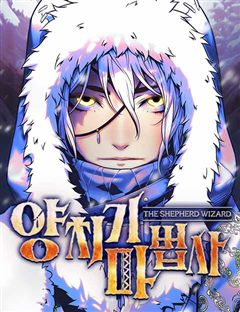
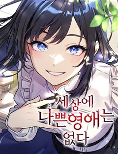
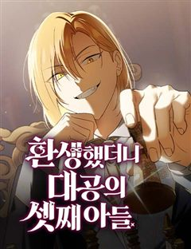
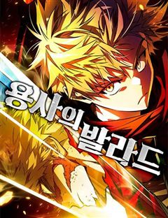
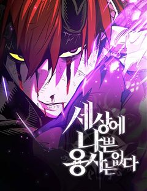

중세·용사·마법 웹툰 추천 TOP 30
중세판타지액션, 용사, 마법, 중세 같은 태그가 붙은 작품을 모았어요. 네이버웹툰·카카오웹툰·레진코믹스에서 조건에 맞는 작품 62개 중 인기 순으로 30개를 골랐어요. 인기 TOP 3: 별을 품은 소드마스터, 쿠베라, 66666년 만에 환생한 흑마법사
2026-10-09 기준 · 성인 작품 제외
내 취향으로 더 좁혀서 추천받기 →-
1
 네이버웹툰
네이버웹툰별을 품은 소드마스터
기사를 동경하는 슬럼가의 부랑아 블라드. 검은 벼락을 맞는 사고 이후부터 들리기 시작한 누군가의 목소리와, 어느 날 갑자기 등장한 푸른 달빛의 기사가 블라드의 세계를 산산조각내면서 뒷골목 소년의 삶이 송두리째 변하기 시작하는데... 높디높은 밤하늘에 있지 않더라도, 아무도 보지 못하는…
중세판타지액션용사시리어스서양소년물네이버웹툰에서 보기 → -
2
 네이버웹툰
네이버웹툰쿠베라
신의 이름을 가진 소녀 쿠베라 리즈. 15세 생일에 외출에서 돌아오다가 초토화되어버린 마을을 목격하게 되는데..! 신, 수라, 마법사들 사이에서 펼쳐지는 소속불명 장르 혼합 판타지.
마법절망적인신화크리처로맨스네이버웹툰에서 보기 → -
3
 네이버웹툰
네이버웹툰66666년 만에 환생한 흑마법사
강대했던 흑마법사 디아블로 볼피르. 12신의 계략에 당해 억겁 속에 봉인되었지만, 그로부터 66666년이 흘러 다시금 이 땅에 강림한다! "응애!" 웰턴 백작의 갓 태어난 장남으로. 딥다크 매직 판타지 시작!
중세판타지액션마법서양신화환생네이버웹툰에서 보기 → -
4
 네이버웹툰
네이버웹툰나태 공자, 노력 천재 되다
잠을 도피처로 삼아 온 소년 아이른 파레이라. 사람들은 그를 나태 공자라 부르며 조롱했지만 그는 변할 생각이 없었다. 어느 날 어느 검사의 꿈을 꾸기 전까지는... 그것은 그저 묵묵히 수십 년간 검을 휘두르며 단련하는 한 재능 없는 사내에 관한 꿈이었다.
중세판타지액션서양왕족/귀족아카데미물성장물네이버웹툰에서 보기 → -
5
 네이버웹툰
네이버웹툰아카데미의 천재칼잡이
후회로 점철된 채 끝나버린 삶. 우연히 찾아온 두 번째 기회. 세상을 구하기 위한 로난의 모험이 시작된다.
용사마법액션판타지크리처아카데미물네이버웹툰에서 보기 → -
6

-
7
 네이버웹툰
네이버웹툰악당들의 후원자가 되었다
좋소 노예인 내가 게임 속 귀족으로 빙의되었다. 근데 미래의 악당들에게 죽는 엑스트라라고? 이들을 교화시켜 어떻게든 귀족 생활을 누리고 말 테다! 아직 어린 악당들의 흑화를 막기 위해 후원했고, 어려운 환경을 극복하게 만들어줬다. 그 결과 뿌듯함이 느껴질 만큼 모두 훌륭하고 평범하게…
마법액션판타지판타지개그게임소년물네이버웹툰에서 보기 → -
8
 네이버웹툰
네이버웹툰어느 마법사의 식당
요리사를 꿈꾸던 내가 사고로 이세계에 떨어졌다. 몬스터와 마법이 넘쳐나는 판타지 세계이지만 여기라고 식당을 못할 건 없잖아? 그러나 전쟁으로 인해 이세계에 들어오자마자 군대에 끌려가게 되고, 15년간의 고생 끝에 드디어 나만의 식당을 열게 되는데...
마법요즘핫한추천작힐링차원이동게임판타지네이버웹툰에서 보기 → -
9
 네이버웹툰
네이버웹툰시한부 천재 암흑기사
극악의 난이도로 악명이 자자한 판타지 RPG ‘이너 루나틱’. 어린 나이, 시한부 판정을 받은 유찬에게 이 게임은 자신의 전부였으며 이제는 잔인한 현실이 되었다. 지금부터 유찬은 시한부이자, 작중 1부 최대 악역 녹스 폰 리인하버로서 이 세계에서 살아남아야 한다. 과연 무사히 그는 이…
마법게임상태창악역이주인공아카데미물네이버웹툰에서 보기 → -
10
 네이버웹툰
네이버웹툰야매 힐러로 사는 법
어느 날 강승현은 이곳 아즐 대륙에서 눈을 떴다. 이유는 모른다. 그냥 깨어나고 보니 한국이 아닌 판타지 세계에 던져진 것이다. ‘내가 왜 이딴 곳에 온 걸까.’ 그때 눈앞에 떠오르는 상태창 [당신의 직업은 힐러'?입니다.] 하지만 그의 스킬 중에는… ＇응? …힐이 없네?' 그것이 힐…
용사마법액션판타지서양상태창네이버웹툰에서 보기 → -
11
 네이버웹툰
네이버웹툰용사보다 너무 강해서 힘을 숨김
어릴 적부터 만화 속에 나오는 주인공보다 평소에는 가벼워 보이지만 사실 누구보다 강한 '힘을 숨긴 캐릭터'가 멋있었다 그리고 찾아온 전생의 기회! "새로운 세상에서 무엇이 되고 싶나요?" "힘숨찐이 되고 싶어!" ...내가 바란 힘숨찐은 이런 게 아닌데!?
용사마법액션판타지신화소년물네이버웹툰에서 보기 → -
12
 네이버웹툰
네이버웹툰멸망한 가문의 회귀자
후회로만 가득한 생. 스스로의 잘못을 깨닫고 다시 사람이 되고자 했을 때, 이미 가문은 불타 사라진 뒤였다. 발악 같은 분노로 하루하루 연명하던 삶. 그 절망의 끝에서, 간절한 염원이 하늘에 닿았다. 용서받지 못한 자. 운명을 거슬러 검을 들다.
중세판타지액션서양가족왕족/귀족성장물네이버웹툰에서 보기 → -
13

-
14

네이버웹툰양치기 마법사
히사릴 언덕의 평범한 양치기 '투란' 대마법사의 재능을 숨긴 채 살아온 그가 드디어 세상 밖으로 나오게 된다.
마법성장물먼치킨소설원작네이버웹툰에서 보기 → -
15

네이버웹툰세상에 나쁜 영애는 없다
귀족 영애라는 족속들은 싸가지가 없거나, 머리에 꽃밭밖에 없다. 그런 말이 무성하던 시대에도, 그녀들을 가르치는 사람이 있었으니, 평민 ‘데릭’은 마법 재능을 깨닫고 용병으로 활약하던 중, 어느 날 귀족 영애들의 마법 교사로 초빙된다. 싸가지 없던 영애들을 ‘사람’으로 만들어주는 일타…
중세판타지액션액션판타지왕족/귀족성장물소설원작네이버웹툰에서 보기 → -
16
 네이버웹툰
네이버웹툰라서드
절대적 권능을 지닌 11인의 왕과, 왕을 수호하기 위한 기사단이 존재하는 세계. 수습기사 힌타는 파트너 캐넛과 함께 정식 기사가 되기 위한 모험을 떠나는데... 정식기사가 되기 위한 소년들의 고군분투 정통판타지액션!
중세판타지액션액션판타지소년물모험세계관네이버웹툰에서 보기 → -
17
 네이버웹툰
네이버웹툰변경백의 10클래스 망나니
칠십대의 늙고 추레한 마법사는 육십 년 전으로 돌아온다. 아주 오래된 그리워하던 어떤 날로…….
마법중세액션판타지감성적인시리어스네이버웹툰에서 보기 → -
18
 네이버웹툰
네이버웹툰대마법사 커리큘럼
착하고 의롭지만 조금? 무섭게 생긴 마법사 유진, 스승의 딸인 아인을 제자로 거둬 대마법사로 키우고자 한다. 마법으로 구원받고 마법으로 혼란스러워진 세상에서, 유진쌤과 함께 위대한 대마법사를 목표로 나아가자!
마법액션판타지우정액션판타지네이버웹툰에서 보기 → -
19
 네이버웹툰
네이버웹툰미드우트
괴물 처치 부대 '스레투'가 사라진 지금... 인간들은 괴물들의 먹이가 되었다. 이유는 '이안'이라는 오퍼 지원자가 모든 군인들을 죽여버렸기 때문이다. 태어날 때부터 생명의 위협을 받으며 살아온 '진청도'는 전설의 아이템 '미드우트'를 이용해 과거로 가서 스레투를 학살한 이안을 죽이려…
마법액션판타지과거동양이능력네이버웹툰에서 보기 → -
20
 네이버웹툰
네이버웹툰천 살 연하 황제가 집착한다
숲에서 거둔 아름다운 소년 때문에 천 년의 계획이 망가져 버렸다. 결국 아리엘은 그 소년을 버렸다. 10년 후. 버림 받은 원한을 품은 소년, 세드릭이 숲에 쳐들어 온다. 그리고 세드릭은 숲을 활활 태우는 불길 속에서, “결혼하자, 아리엘.” 이라며 청혼했다. 아리엘, 나이-1000살…
마법서양왕족/귀족집착남연하남네이버웹툰에서 보기 → -
21
 네이버웹툰
네이버웹툰내가 죽인 드래곤과 결혼했다
반신의 경지라 불리는 9서클. 그 마지막 열쇠는 레드 드래곤, 발드로바의 심장이었다. “설마 짐의 약혼자가 짐을 죽이러 올 줄이야.” 어째서인지, 발드로바는 저항 없이 스스로 심장을 내어주었다. "... 뭐냐, 이 감정은. 어째서 이토록 찝찝한 거냐?" 아아, 나는 보고 말았다. 내…
마법액션판타지소년물액션판타지네이버웹툰에서 보기 → -
22

네이버웹툰환생했더니 대공의 셋째 아들
혈통 때문에 출세하지 못하고 용병으로 죽었다. 그런데 다시 눈을 뜨자 내가 대공의 아들이란다. 그토록 바라던 가문, 지위 재능까지 모두 갖춰졌으니 정점까지 올라가 봐야겠지? 전(前) 용병 단장, 현(現) 대공 셋째 아들의 파격적인 귀족 라이프가 시작된다.
중세판타지액션왕족/귀족성장물소설원작네이버웹툰에서 보기 → -
23
 네이버웹툰
네이버웹툰마법사가 죽음을 맞이하는 방법
“이제 끝내고 싶어.” 사악한 드래곤을 없애야 죽을 수 있다는 저주로 인해, 300년이라는 긴 시간을 살아온 대마법사 엔테. 마침내 드래곤을 물리치고 안식을 맞이했으나 눈을 뜬 곳은 사후세계가 아닌, 휘황찬란한 귀족 저택이었다. 더군다나 마법이라곤 로맨스 판타지 소설밖에 모르는 귀족…
중세판타지액션마법서양왕족/귀족능력녀네이버웹툰에서 보기 → -
24네이버웹툰
이세계서 유부남된 썰
“토끼 같은 마누라와 몽구스처럼 귀여운 딸을 갖고 싶습니다.” 크리스마스 이브, 신비한 산타에게 소원을 빌고 집에 가는 길. 그런데, 눈을 떠보니 이세계였다...?!
용사중세가족힐링차원이동네이버웹툰에서 보기 → -
25네이버웹툰
검 먹는 소드마스터
영문조차 모른 채 소드마스터에게 모든 것을 잃은 아르한. 죽음 같은 절망 속에서, 전설로만 전해지던 선조 리암 카라반이 모습을 드러낸다. 리암이 제시한 아르한의 유일한 복수 방법은 바로- “검을 먹고, 그 안에 깃든 힘을 자신의 것으로 만들어라.” 그 순간 소년 아르한의 복수는 시작되…
중세판타지액션소년물성장물소설원작네이버웹툰에서 보기 → -
26

네이버웹툰용사의 발라드
양치기로 10년, 전쟁터에서 10년, 희대의 살인마로 10년. 하이덴 들판의 양치기로 시작하여 소드 마스터이자 죽음을 몰고 다니는 강철 사신으로 죽은 남자, 리키. 불과 강철, 피, 죽음의 냄새와 비명만이 가득한 삶을 보냈던 그는 들판에서 쓸쓸한 죽음을 맞고, 백년 후 전쟁이 끝난 세…
용사중세레드아이스 스튜디오액션판타지소년물네이버웹툰에서 보기 → -
27
 네이버웹툰
네이버웹툰방랑기사로 살아가는 법
불의의 사고로 사망 후 에이츠 가문의 요한 에이츠로 환생한 김요한. 귀족으로 태어났으나 요한 에이츠는 가문 내 서열 꼴찌. 설상가상으로 이 세계는 무자비한 중세다. "믿을 수 있는 건 오직 자기 자신뿐." 약육강식인 이 세계에서 살아남으려면 돈과 힘이 필요하다! 현대인 시절의 지식을…
중세판타지액션중세레드아이스 스튜디오사이다판타지개그네이버웹툰에서 보기 → -
28
 네이버웹툰
네이버웹툰마탑의 문제아들
백탑의 마탑주 오스카 세이지와 백탑의 마법사들. 인류의 미래를 위해 목숨을 비롯한 모든 것을 바쳤다. 그로부터 20년 후. 오스카 세이지가 다시 눈을 떴을 때, 창문에 비친 건 기초 마법밖에 쓰지 못하는 1레벨 마법사. 그리고 4대 마탑 퇴출 위기를 맞은 백탑이었다. 돌아온 마탑주,…
마법액션판타지이능력소년물환생네이버웹툰에서 보기 → -
29
 네이버웹툰
네이버웹툰히어로메이커
왕은 영웅이 되고 싶어하는 공주의 소원을 들어주기로 전격 결심! 공주를 속이고 마치 영웅이 된 것처럼 만들기 위해 온 나라가 연극을 하게 되는데..파란만장한 그들만의 눈물겨운 영웅만들기의 대장정이 펼쳐집니다~
용사판타지개그서양모험전쟁네이버웹툰에서 보기 → -
30

네이버웹툰세상에 나쁜 용사는 없다
세상에서 가장 강한 남자라 불렸던 사나이. 세계 최대 격투기 리그의 헤비급 챔피언. 최강의 남자였던 최현석은 죽음 이후 이세계의 용사로서 새로운 삶을 시작한다. '부! 명예! 미녀를 독차지하는 용사!' 찬란한 미래를 꿈꾸며 이세계로 이동한 그가 조우한 것은 자신보다 머리 하나는 더 큰…
용사액션판타지판타지개그열혈상태창네이버웹툰에서 보기 →